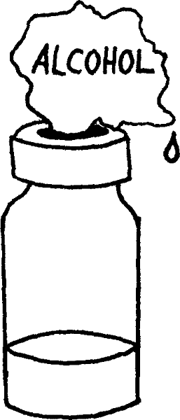
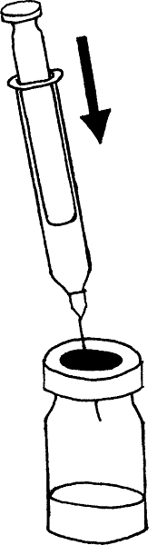

{% set pagetitle = "How to inject medicines
into muscle
If the medicine comes as liquid in a bottle" %}
{% set seq_length = 7 %}
{% set seq_position = 1 %}
{% set seq_llink = "javascript:;" %} ## set rlink equal to next page href
{% set seq_rlink = "How_to_injection_from_bottle2.html" %} ## set llink equal to previous page href
{% extends "templates.jinja/base.page-with-sequence.html" %}
{% block title %} Hesperian - Pregnancy & Birth{% endblock %}
{% block id %}Injection_from_bottle1{% endblock %}
{% block content %}

- 1. Clean the rubber top of the bottle with a sterile gauze or cloth that has been soaked in alcohol. This keeps dirt off the needle and out of the medicine.
- 2. Pull the plunger back to fill the syringe with air. Then push the syringe through the top of the bottle, and inject the air into the bottle.
{% endblock %}
{% block footer %}
{% endblock %}